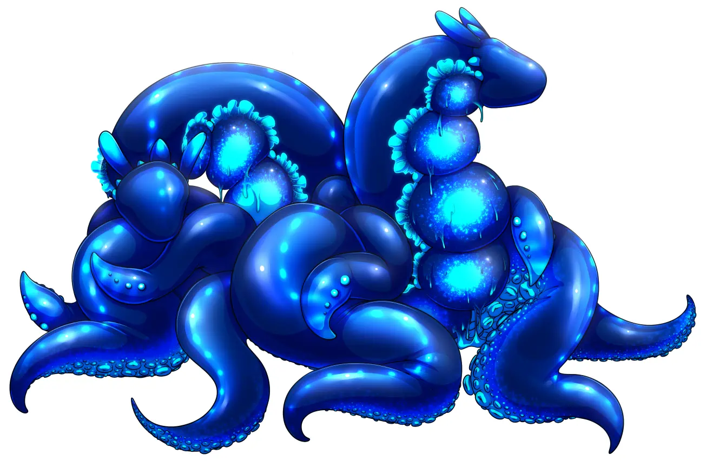

The Limax are a species of utrine symbiotes found across much of the world. They are common within warmer, darker, wetter climates but can be found anywhere there's significent moisture. The largest known population of Limax is situated in the Sutetu Valley near the twin lakes.
The Limax are best known for their unique symbiotic relationship with human hosts, particularly females. Upon bonding with a host the Limax integrates itself into the host's reproductive system, providing relief from menstrual cramps, pain, and bleeding. Over time, the Limax changes the host's body, enhancing strength, speed, and overall health. This transformation, however, results in the host appearing pregnant due to the Limax's presence.
Physiology and Characteristics
Limax appear as large slung-like creatures, albit eyeless and somewhat aquatic in appearance due to having two long fins which run the length of their bodies. Their skin is slick but not slimy, bends and deforms like rubber, but feels more akin to silicone, and comes in every primary color, with neon, pastell, glossy, and matte varrients of each hue. Young Limax are roughtly the size of a large cucumber, with older un-hosted Limax growing to the size of a human woman's forearm. Limax with a host can reach the size of a large pumpkin, as they are able to grow to maturity.

A Limax in their typical active form.
Limax are aware of the discomfort they can cause a host given their size, and take great care to sculpt a host's body as they grow by flooding their host with the right hormones at the right time, as well as magical means. The combination ensures no discomfort or distress from their host no matter what size or shape they take.
Limax are capable of shape-shifting and changing size. Their natural shape is that of a somewhat "lumpy" tapered cylender with a distinct head with a "mane" of 3-6 psudopods. Their shapeshifting is limited to creating tentacles and psudopods by simply extruding them from their body. These limbs can reach lengths of up to 3 meters, though most Limax prefer to keep their limbs limited to a meter in length as they have a maximum overall volume they can achieve (aprox 6,942.0% of their natural size) and they prefer quantity to size.
Outside of a host, a Limax uses their tentacles to locomote, capture prey, and interact with their environment. Within a host, a Limax will use several of its limbs to anchor itself, intigrate with their host's biology, and extrude them from their host's various orfaces to provide their host with physical assistance in whatever they might be doing at the time.
Limax are exothermic but relativly cool with a surfice tempature of 25°C (77°F). Limax hosts report their tempature as "pleasently warm", and are incredibly aware of any temapture fluxuations of their symbiote, often able to tell if they are ill before the Limax can just by their tempature dropping or rising.
Limax require a host to grow to maturity and reproduce. Without one their lifespan is limited to a mere 5 years. With a host, a Limax will live as long as their host, typicaly dying the same minute as their host (assuming a natural death. Limax who survive the death of a host cannot take a new host, and will die within several weeks due to starvation. This is not out of a physical inability to eat, but rather due to an intence depression preventing them from taking most any action.).
Limax reproduction functions by consuming hormones produced by their host when their host is romanticaly involved with a partner over a long priod, and using them to manufacture spermazoa in order to self-fetilize. Limax are capable of taking their host's partner's seed and encasing some of it in their eggs while implanting their host's seed, ensuring their host can reproduce in the same clutch as them while also managing their host's prgnancy for comfort, safty, and to ensure their home isn't taken over.
Average size of a host's belly over time.
Telepathic and Sapientce
Limax are sapient lifeforms. Their short lifespans outside of a host have prevented them from developing civilizations more complex than simple hunter-gatherer tribes. They are fast learners, able to benifit from the wisdom of longer lived species simply by being taught. They will even attempt to perserve this knolage by teaching others of their kind, especialy grubs. As they cannot reproduce without hosted Limax, their teachers are typicaly members of other species.
Limax cannot speak but are telepathic. They have unique "voices", all of which sound femanine, cute, and invoke a sence of friendlyness and a desire to help. While the more cynical would call their voices a "mere lure", those living within close proximity to Limax tribes know that is an accurate representation of the species.
A Limax's host gains a limited version of their telepathy in the form of a greatly enhanced empathic sence, as well as a direct permanant two way link to their symbiote. This link exists even if host and symbiote are physicaly seperated, and appears to have no limit in so far as its distance.
The link is more than a mere means of communication. It bonds the two minds togeather so intamently that the two individuals form one person with both minds thoughts, feelings, and desires merging and melding to a large (but not total) extent.
Cultural Integration
The emergence of the Limax has deeply influenced the cultures of many regions in the world. In those which have embraced the use of the symbiotes, bonding ceremonies have become societal events, where communities celebrate the union of Limax and host. Several of these cultures limit hosting a Limax to their nobility, others to their warrior castes, with a few allowing most if not all females to host if they choose.
Converstly, those which reject hosting the symbiotes often deny tribes new hosts, intentionaly killing off wild tribes while keeping a few in captivity for emergancy medical use or to punish certain crimes. Others will persucute hosts, seeing the act of hosting as an abomination of the natural order.
Smaller settlments are more likly to fully accept Limaxi, as a host-pair is slightly stronger than the average human male. This allows hosts to work hard labor jobs, act as warriors, and other strength-based professions, assuming strength is sexualy dimorphic within the settlment's species. These communities see the Limax as a solution to labor shortages, and often intigrate them as full citizens, keeping ponds in town to serve as homes for grubs.
Historical Impact
Wars and conflicts over regions abundant in Limax resources have shaped the history of Hamir. Civilizations have risen or fallen based on their ability to harness the benefits of Limax symbiosis. Historical figures revered for their symbiotic achievements are immortalized in folklore, adding a mythical layer to the Limax's impact.
This is naturaly only true of regions where they can be found. It's also not typical of civilizatiosn which embrace them. While it has proven to be the magic which has made some civilizations great, it's also just been "a thing" for others.
Limitations and Risks
A multi-symbiote host with 4 symbiotes after 7 years.
While the Limax offers numerous benefits, it is not without risks. Instances of unsuccessful bonding do occure with some regularity. While the host typicaly survives, the Limax does not, and the host's reproductive ability is typicaly destroied in the process. In some situations a Limax can fail to provide its benefits to their host, introducing elements of tension and uncertainty into the Limax-host relationship. In some exceptionaly rare cases, the Limax cannot prevent its transfomrative abilities from influncing its host, leading to bizzare mutations or a cosntantly increacing version of the Limax's usual benifits in the best of cases.
There is also the risk to the host for simply hosting. A host must be food secure, as she will be eating a diet equivilent to an extreemly late term pergancy her entire life to sustain her symbiote. The dietary requirments also make it quite hard to maintain a healthy percentage of body fat, which most hosts will make up for through eating more expensive foods.
There is an additional risk for hosts who are attracted to same-sex partners. If their symbiote is not also same-sex attracted (which is extreemly rare) the host may experiance distress when their symbiote wishes to mate, and when feeling the thoughts and desires of their symbiote as it observes males through their sences. Howeaver, in the rare gay-gay host-symbiote parings, there is the certainty of the symbiot altering her host's body to make them better able to please and attact female partners (most lesbians see this as nothing but perks, leading to an underground trade of known gay Limax grubs).
It is possible for an average female to support up to six Limax. This is not reccomended. Indeed taking more than one symbiote is not reccomended. It is, howeaver, something many kinky women do simply because they and their allready existing partner like being big. Astonishingly, asside from the coloric intake needed and the issues with fitting through doors and using furnature, the host is in no pain nor detriment from multiple Limax symbiotes.
Unique Abilities
Most Limax have magical potential, and nearly all which do learn to harnice their magic to cast spells. While they are happy to cast spells for their host, they do not tend to do so for themselves. This is due to the unique magical ability the Limax posess, a conditional, yet total, immunity to magic.
Limax simply cannot be affected by magic if they do not wish to be, and have not used their own magic within the last 45 minutes. This immunity takes the form of a reality anchoring effect that will prevent direct and indirect magical effects from affacting them for good or ill.
Furthermore, they will be aware of any attempt to affect them with magic and will have a general idea of what the magic will do (not not its orgin). This ability extends to their host, but after bonding the Limax's magical negation becomes magical resistance, whcih it does not share with its host.
Romantic Relationships in Limax-Host Pairs
Romantic relationships within Limax-host pairs add a profound and intimate layer to the usual bond between partners. Their telepathic link fosters unparalleled emotional intimacy, with shared experiences and memories forming the foundation of these connections. Physical changes brought about by the Limax become symbols of strength and resilience, challenging societal norms of beauty and attractiveness.
One would assume that a Limax-host pair would therefore not need companionship. This is entirly false. The bond is so intence and close that host-pairs begin to think of themselves as one person, become lonly, and seek out companionship for reasons other than reproduction, just as if they were a normal single individual.
Utrine Symbiotes
Utrine symbiotes are a class of organisum which require a female (or herm) host to survive. They are defined by adapting their host's uterus for their survival, tapping into it in much the same way as a fetus would to obtain nutrients and otherwise interface with their host.
Unlike parasitic organisms, uterine symbiotes offer some benifit to their host in exchange for what they take from them. This verries a good deal species to species, but all utrine symbiotes take advantage of their anchor point's control over the host's hormones to preform some level of hormone regulation. Typicaly they will stop piriods / heat cycles entirly for their own needs, but often take over the function of many glands, ensuring the host's health remains in excelent condition.
The Sutetu Valley is a small region in upper Gynerium accessed through the elven controlled Xivric pass. It is best known for having the highest population of Limax in the known world and the river Tsnem. The river is famious for flooding on or near the day of the full moon, easily doubling its flow rate and widening by 4-5 meters.
The source of the river's flooding is related to a semi-dormant volcano which exerts pressure on a vast aquafer once every 27-32 days. The pressure forces water to the surfice, bubbling out of the many extinct volcano crators in the valley's surrounding mountains. The water then flows down the usual runoff paths, flooding the river.